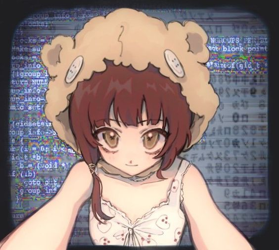
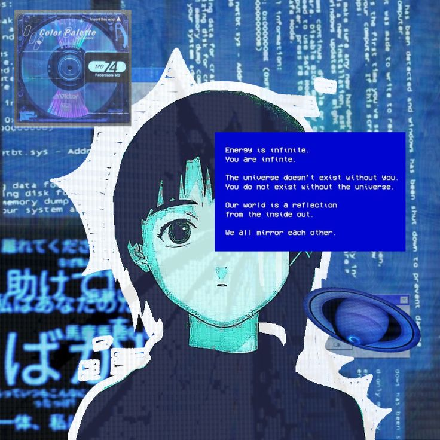
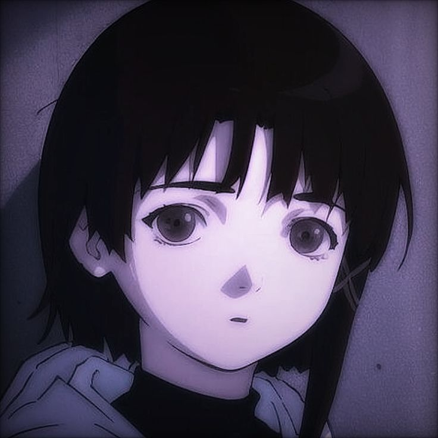
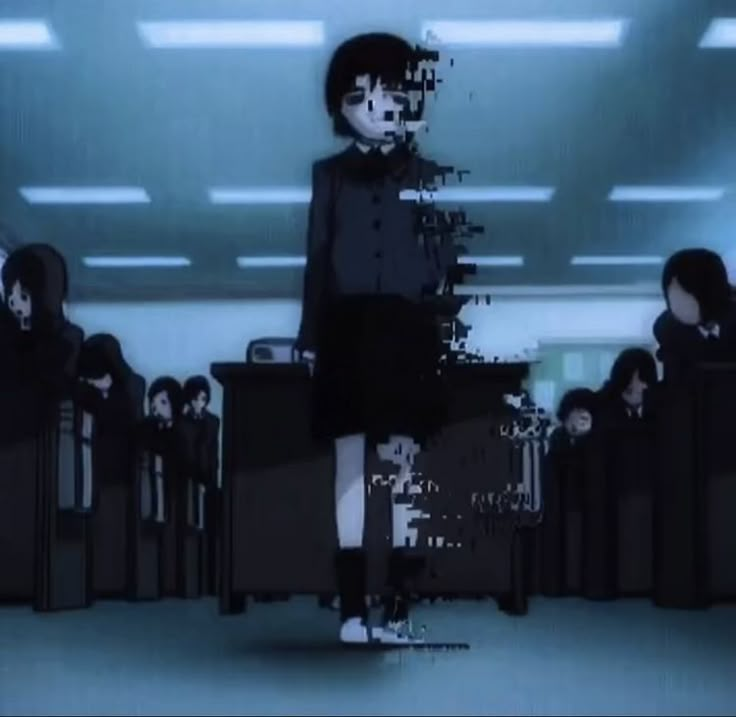
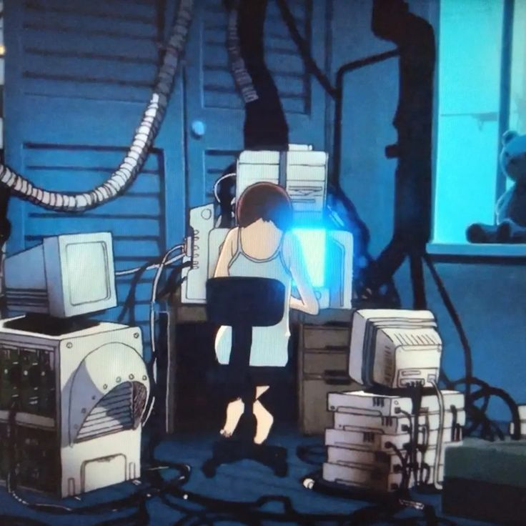

RESUMO
Lain Iwakura, uma estudante aparentemente comum, começa a receber e-mails de uma colega que cometeu suicídio. Isso a leva a mergulhar em uma misteriosa rede virtual conhecida como "Wired". À medida que sua consciência se funde com o mundo digital, Lain se vê envolvida em questões existenciais, tecnologia, identidade e a fronteira entre o real e o virtual.